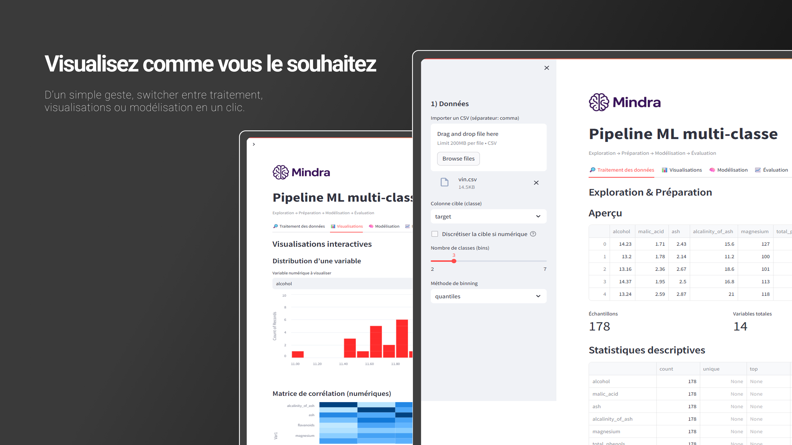

Nettoyez et normalisez sans effort
Imputation (moyenne, médiane), normalisation (Standard/MinMax/Robust), gestion des outliers (Winsorisation IQR), sélection de variables.
Discrétisation de la cible
Transformez une cible numérique en classes : quantiles (effectifs équilibrés) ou largeur égale (intervalles uniformes). Choisissez le nombre de bins.
Aperçu instantané
Statistiques descriptives, valeurs manquantes, aperçu des colonnes numériques et catégorielles.

Visualisez comme vous le souhaitez
Histogrammes, matrice de corrélation, scatter matrix (pairplot-like) — Altair pour des graphiques interactifs et légers.
Répartition des classes
Suivez l’équilibre des classes pour anticiper les effets sur la stratification et la validation croisée.
Focus données
Comprenez la structure de votre dataset avant d’entraîner vos modèles.
Entraînez en quelques clics
Régression logistique, Random Forest, KNN, SVM (RBF). Hyperparamètres ajustables, class_weight='balanced', et validation croisée jusqu’à 5-fold.
Pipeline scikit-learn
ColumnTransformer (num/cat) + SelectKBest (optionnel) + modèle. Export .pkl du pipeline complet, prêt à l’emploi.
Reproductible
RandomState, n_jobs=-1 pour optimiser. Paramètres persistés entre onglets.
Évaluez vos modèles en toute clarté
Accuracy, Precision, Recall, F1 (pondéré), ROC AUC (macro OvR), matrice de confusion, rapport de classification complet.
Sur-apprentissage
Comparaison train vs test : alerte si l’écart dépasse le seuil. Gardez le contrôle sur la généralisation.
Décision
Choisissez le meilleur modèle en croisant les métriques et la stabilité (CV).
Tarifs
Commencez gratuitement. Passez à Pro quand vous avez besoin d’aller plus loin.
Gratuit
- Exploration & visualisations
- Préprocessing complet (imputation, normalisation, IQR)
- 4 modèles de classification
- Export du pipeline .pkl
Pro à venir
- AutoCV & recherche d’hyperparamètres
- Explicabilité (importance avancée, SHAP*)
- Support de modèles supplémentaires (XGBoost, LightGBM*)
- Import/Export projets & presets
* fonctionnalités prévues
FAQ
GitHub Pages peut-il héberger l’application ?
Non. GitHub Pages sert uniquement pour cette page vitrine statique. L’application exécutable tourne sur Streamlit Cloud.
Quels jeux de données sont compatibles ?
Tous les CSV avec une colonne cible (catégorielle ou numérique si vous activez la discrétisation), et des colonnes numériques/catégorielles.
Puis-je ajouter d’autres modèles ?
Oui, côté application : c’est un pipeline scikit-learn. Vous pouvez étendre la liste des estimateurs et améliorer les métriques.